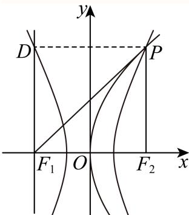
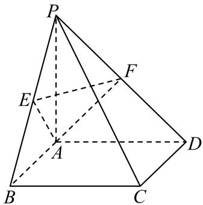

01 【来源：崇明25二模·1】
查看所属专题不等式 的解集为______。
答案与解析
答案
(−1,3)
解析
，故解集为 。
整卷阅读 · 教师版 · 21 题
按来源题号排列；内容来自分类汇编，仍需回源核对。
没有找到匹配题目。
不等式 的解集为______。
(−1,3)
，故解集为 。
已知复数 （ 为虚数单位），则 ______。
[分析]由复数的乘法即可求得答案.
[详解]
故答案为：2+i
已知全集 ，集合 ，，则 ______。
{1}
由 、，只有元素 属于 而不属于 ，因此 。
求直线 与直线 的夹角为______。
先求出直线的斜率，可得它们的倾斜角，从而求出两条直线的夹角.
解：·∵直线x=-2的斜率不存在，倾斜角为
直线 0的斜率为 倾斜角为
故直线 直线 的夹角为
故答案为：
已知 ，，则 ______。
，故 。
函数 的最小正周期是 ，则 ______。
2
由最小正周期公式 ，且 ，得 。
某次数学考试后，随机选取14位学生的成绩，得到如下茎叶图，其中个位数部分作为“叶”，百位数和十位数作为“茎”，若该组数据的第25百分位数是87，则 的值为______。
| 茎 | 叶 |
|---|---|
| 7 | 5 |
| 8 | |
| 9 | |
| 10 | |
| 11 | |
| 12 | 5 |
7
根据题意结合百分位数的概念运算求解.
，则该组数据从小到大排列后的第四位数是87，即x=7,
故答案为：7.
在 中，若 ，，其面积为 ，则 ______。
由面积 得 。余弦定理给出 ，故 。边长为正，所以 。
若 ，则 ______。
在恒等式中令 ，则所有 均为1，所以 。
已知 若函数 有两个极值点，则实数 的取值范围是______。
(0,2)
左段抛物线开口向下，顶点为 ；右段 在 时没有极值点。两段在 处连续，要有两个极值点，必须一个是左段内部的顶点，另一个是接点 。
因此须有 ；此时左段在顶点右侧递减，为使接点成为极小值，右段应递增，即 。两条件合并得 ，此时确有两个极值点。 时右段恒定，不能恰有两个极值点。故范围为 。
已知双曲线 的左、右焦点为 ，以 为顶点， 为焦点作抛物线交双曲线于 ，且 ，则 ______。
设半焦距为 ，抛物线为 。
角度条件给出 ，联立得 ，所以 。
因此 。
双曲线实半轴为1，故 ，得 ，从而 。

已知集合 中的任一个元素都是整数，当存在整数 ， 且 时，称 为“间断整数集”。集合 的所有子集中，是“间断整数集”的个数为______。
968
不间断的非空子集必须是某一段连续整数 ，由首尾确定，共 个；此外空集也不满足间断定义。所以所求为 。
若 ，，则下列结论正确的是（ ）。
A.
B.
C.
D.
D
A： 给出 ，错误。
B：取 ，则 ，错误。
C：取 ，则 ，错误。
D：因为 ，将 两边同除以它，得 ，正确。选 D。
已知一个圆锥的轴截面是边长为2的等边三角形，则这个圆锥的侧面积为（ ）。
A.
B.
C.
D.
A
轴截面等边三角形的边长为2，所以圆锥的母线 ，底面半径 。侧面积为 ，选A。
抛掷一枚质地均匀的硬币 次（其中 为大于等于2的整数），设事件 表示“ 次中既有正面朝上又有反面朝上”，事件 表示“ 次中至多有一次正面朝上”，若事件 与事件 是独立的，则 的值为（ ）。
A.
B.
C.
D.
C
，，。
独立条件化简为 。
不满足， 满足；且当 时， 严格增加，故此后不再相等。
所以 ，选C。
数列 是等差数列，周期数列 满足 ，若集合 中恰有三个元素，则数列 的周期 的取值不可能是（ ）。
A.
B.
C.
D.
D
以下构造都使余弦值恰有三个： - 时，循环为 ，周期为4； - 时，五个角的余弦两两对称，恰有三个值，周期为5； - 时，循环为 ，周期为6。
证明7不可能：若 ，则 对所有 成立。
若前一因子非零，则所有后一因子为零，推出 是 的整数倍，至多有两个余弦值，矛盾。
因此 。
不能被7整除，否则余弦为常数；故一周期内有7个模 不同的角，而一个余弦值最多对应其中两个角，至少需4个余弦值，仍矛盾。
故选D。
如图，在四棱锥 中，底面 是边长为2的正方形，且 ，，，点 分别为 的中点。

（1）求证： 平面 ；
（2）求点 到平面 的距离。
证明见解析;
（1）因为 且 ， 是平面 内相交直线，故 平面 ，从而 。
同理由 得 。
在底面内相交，所以 平面 。
（2）由 ，以及直角三角形斜边中线性质，得 。又 ，故 为等边三角形，面积为 。
为 中点，故 。
由 平面 ， 为 中点，知 到平面 的距离为 。
设 到平面 距离为 ，用同一四面体换底求体积： 得 。
已知 。
（1）是否存在实数 ，使得函数 是偶函数？若存在，求实数 的值；若不存在，请说明理由；
（2）若 且 ，解关于 的不等式 。
（1）存在，；（2） 时为 ， 时为 。
（1）非空定义域为 。偶函数的定义域须关于0对称，故必须 ；代入得 ，定义域 ，确为偶函数。
（2）两个函数值同时有意义要求 且 。
对数底数3大于1，故原不等式等价于 ，化简为 。
若 ，得到 ，与定义域相交得 ；若 ，得到 ，解集为 。
某区2025年3月31日至4月13日的天气预报如下（温度依次为最高气温和最低气温）。
| 日期 | 天气 | 最高气温/℃ | 最低气温/℃ |
|---|---|---|---|
| 3月31日 | 大部分晴 | 17 | 9 |
| 4月1日 | 阵雨 | 18 | 9 |
| 4月2日 | 阵雨 | 18 | 10 |
| 4月3日 | 阵雨 | 19 | 10 |
| 4月4日 | 多云 | 18 | 9 |
| 4月5日 | 间歇性多云 | 19 | 10 |
| 4月6日 | 多云 | 20 | 10 |
| 4月7日 | 阵雨 | 19 | 10 |
| 4月8日 | 大部分多云 | 19 | 10 |
| 4月9日 | 大部分晴 | 20 | 8 |
| 4月10日 | 多云 | 18 | 8 |
| 4月11日 | 大部分晴 | 18 | 10 |
| 4月12日 | 阵雨 | 17 | 8 |
| 4月13日 | 阵雨 | 17 | 9 |
（1）从3月31日至4月13日某天开始，连续统计三天，求这三天中至少有两天是阵雨的概率；
（2）根据天气预报，该区4月14日的最低气温是 ，温差是指一段时间内最高温度与最低温度之间的差值，例如3月31日的最高温度为 ，最低温度为 ，当天的温差为 。记4月1日至4日这4天温差的方差为 ，4月11日至14日这4天温差的方差为 ，若 ，求4月14日天气预报的最高气温；
（3）从3月31日至4月13日中随机抽取两天，用 表示一天温差不高于 的天数，求 的分布列及期望。
（1）；（2） 或 ；（3）分布列见解析，。
（1）要求连续三天均在给出的日期范围内，因此起始日从3月31日至4月11日，共12种等可能选择。满足至少两天阵雨的起始日为3月31日、4月1日、4月2日和4月11日，共4种，所以概率为 。
（2）4月1日至4日的温差为 ，均值为 ，故 。
设4月14日温差为 ，则另一组为 ，有 由 ，得 所以 或 。
加上最低气温 ，最高气温为 或 。
来源校订： 原参考答案只列 ，原题没有要求气温为整数，因此不能排除另一根。若额外约定预报最高气温仅取整数，才只保留 。
（3）14天中温差不高于 的有11天，高于它的有3天。故 取 ，其分布为
已知抛物线 ，过点 的直线 与抛物线 交于点 ，与 轴交于点 。

（1）若点 位于第一象限，且点 到抛物线 的焦点的距离等于3，求点 的坐标；
（2）若点 坐标为 ，且点 恰为线段 的中点，求原点 到直线 的距离；
（3）若抛物线 上存在定点 使得满足题意的点 都有 ，求 满足的关系式。
（1）抛物线焦点为 、准线为 。由定义 ，得 。又 在第一象限，，故 。
（2）设 ，由中点关系 。
在 轴上，故 ，。
直线 为 ，原点到它的距离为 。
（3）设 。
竖直直线只交抛物线于一点，所以设割线 ，联立得 。
设两根为 ，则 、。
对 均不与 重合的情形，垂直条件等价于 即 。
要对所有允许的割线斜率成立，须 且 ，因此 。
反之满足此式，取 ，上述恒等式对所有非退化情形成立。
已知函数 ， 为坐标平面上一点。若函数 的图像上存在与 不同的一点 ，使得直线 是函数 在点 处的切线，则称点 具有性质 。
（1）若 ，判断点 是否具有性质 ，并说明理由；
（2）若 ，证明：线段 上的所有点均具有性质 ；
（3）若 ，证明：“点 具有性质 ”的充要条件是“”。
点 P(1,0)具有性质 ，理由见解析
证明见解析
证明见解析
（1）设 ，切线为 。代入 得 ，可取 （也可取2）。因此存在 ，性质成立。
（2），在 处切线为 它经过 的条件为 。
若 ，则 不在函数图像上，因 、，由连续性，对任意 均存在对应 ，且所得 。
若 ，则条件化为 。
，，故存在 ，特别地 ，仍有 。
两种情形覆盖整个线段。
（3）在 处的切线为 。
必要性：令 ，则 ，故在 取得唯一最小值0。
由于 且在此切线上，其横坐标 ，所以 。
充分性：若 ，令 。
有 ，而 时 。
由连续性，存在 使 ，相应切线经过 且 。
因此充要条件为 。